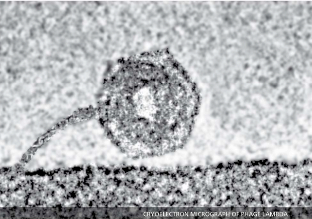

PHYSICS
NEWSLETTER
NEW EMPHASIS ON BIOLOGICAL PHYSICS
Olur department has launched a dramatic expansion in the field of biological physics. Earlier, Research on topic related to Biology was carried out in the department by Norman Ford, Kenneth langley, Monroe Robin Phil Rosen comma and Kandula Sastry. a present expansion is designed to bring a model and go and focus to our efforts in this area. The subject has a long history and has a time been called physical Biology, biophysical chemistry, biological physics, or biophysics; but long before these names were used, Galvani was learning about electricity by observing frog legs twitch, and Helmholtz was intrigued by the act of hearing.